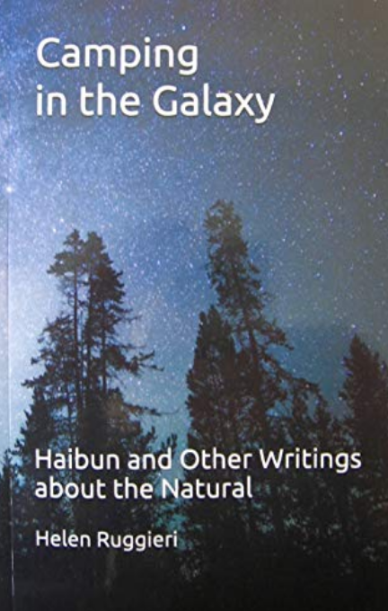

A Quarterly Journal
Jeffrey Woodward, Founder & Owner
Ray Rasmussen, General Editor
Volume 13, Number 2, June 2019

Helen Ruggieri, Camping in the Galaxy: Haibun and Other Writings about the Natural
A Review by Patricia Prime
Helen Ruggieri, Camping in the Galaxy: Haibun and Other Writings about the Natural
World (2019). Saranton, Vermont, USA. Wood Thrush Books. Pb. ISBN 978-0990334392.
Camping in the Galaxy by Helen Ruggieri begins with the section entitled “The Nature of Things: Some Lyrics” and contains 31 pieces, including the title poem “Camping in the Galaxy”. The collection also includes 10 poems in “The Neighbourhood”; 12 poems in “The History of History” and 6 essays in “Natural Essays” sections.
In the Introduction, the publisher writes that he read and published some haibun Helen Ruggieri had sent him for an anthology and found them thoughtful and well-written. He writes, “Her pieces struck that perfect balance between poetry and prose.”
The first poem, “Where We Are”, explains that “the opening of a movie gives a sense of place which shows the room, house, street, etc.” What makes the poems to follow compelling for me is that they delve into a country whose landscape, customs and residents I know very little about. This journey into the unknown is accomplished by a fine writer and poet.
In “Early Morning in the Mist” we are in the hills, which are described as “glaciated, unglaciated, making a rugged edge.” “Deer Run” takes us to twilight in the long fields “when the snow has drifted deep in the hollows between the long chain of rounded hills”. Here the deer come to graze and the poet to watch them. “Reading Maps” transports us to what the poet calls “an ending place” – a place on the map where there are “Deer carcasses on the roadside marked with a red X for pickup.” This hugely enjoyable section also describes a road trip, teaches Anglo Saxon verse forms, takes us on a river walk, focuses on a groundhog, and a piece about Thanksgiving. And there's much more.
The wit and atmosphere of the poet and her contemplation of the countryside continues through the other sections, particularly in the poems in “The Neighborhood.” I especially enjoyed the haibun “Home” which begins:
Can you close your eyes and picture home? If I close my eyes, I can picture a street shaded by maples. Deep in the Anthracite Valley anchored by Wilkes-Barre on the south and Forest City at the north, I spent my childhood.
On the list goes, bringing us several prose poems, including “Progress”, which is about people selling their mother’s house to the business Auto Zone when she was in a nursing home. The section includes“The Revenge of the Lawn. A Recycled Title”, which is perhaps the lengthiest piece. It begins:
The lawn, that greensward, that image of suburbia, that beautiful clipped carpet of green drifting away to the road, that seeing for our jewel of a house, that garden of the rich, that useless piece of pie the middle class appropriated, that lawn is killing us, killing us.
In the section entitled “The History of History”, Ruggieri blends original poetry with classical versioning, so that the first piece “Ataensic” explains how Ataensic “was looking down through a hole under the roots of the world tree when she fell, dropping and dropping into the void.” The haibun ends with this haiku:
the turtle’s back
a Cambrian shield
against chaos
“The Moundbuilders” recalls how aboriginals “followed inland waterways looking for a hilltop that was a perfect sight line. They built a mound which may have been a burial site or a way of capturing time".
There then follow several prose poems about "Washington D.C.", "The Last of the Land Wars", "Looking for Arrowheads in Sure-Find Field" and many more. This sets the elegiac scene for the final section – a poem called “A History Lesson”. This is a beautiful piece imagining how the land must have appeared in the past. It begins:
the shape of the land has been distorted
it’s hard to distinguish, but I look:
imagine the land sloping down to
the river, ignore the levee
imagine King’s Brook not banked
in concrete, but running into the river
The section “Landscape and Art” focuses on “certain landscapes that are sure to produce awe in the readers”. This collection of essays is one of Ruggieri’s most moving pieces, telling of “the emotional need to be linked with nature”.
Nature provides such exotic and entangling places that we can’t help but invest part of ourselves in them. Myths are filled with sacred places, special places.
“Growing up Polluted” begins with a meaningful sentence: “I learned to ice skate in places where nothing grew because the topsoil had been stripped away to get at the coal just beneath the surface." This piece itemises the way nature begins to take over producing blueberries, goldenrod, sumac and alder. Then people dumped their rubbish there and eventually the land was sold.
“Maple Memorial Service” focuses on the poet’s view from her window looking out onto maple trees:
Winter is a good time to see which branches should be pruned. You can spot the scabrous white fungus that grows on the branches – a signal they are finished.
“Heart of Darkness” concentrates on an abandoned mine tunnel:
I thought this was how Pluto had captured Persephone, the earth opening, he dragged her down to his dark domain. In my book of myths, Tanglewood Tales, the chariot was pebbled by a great black stallion, poor Persephone screaming for her mother, Pluto’s face closed, intent on controlling the horse, subduing Persephone, taking what he wanted, no matter.
Camping in the Galaxy is an impressive collection that reveals its secrets slowly. Ruggieri's collection of haibun, poems and essays provide a lively read and offer the author's view of her country, with all its beauty, its faults and failings. This is a generous collection that argues for truth and understanding, for representing people and places as they are.